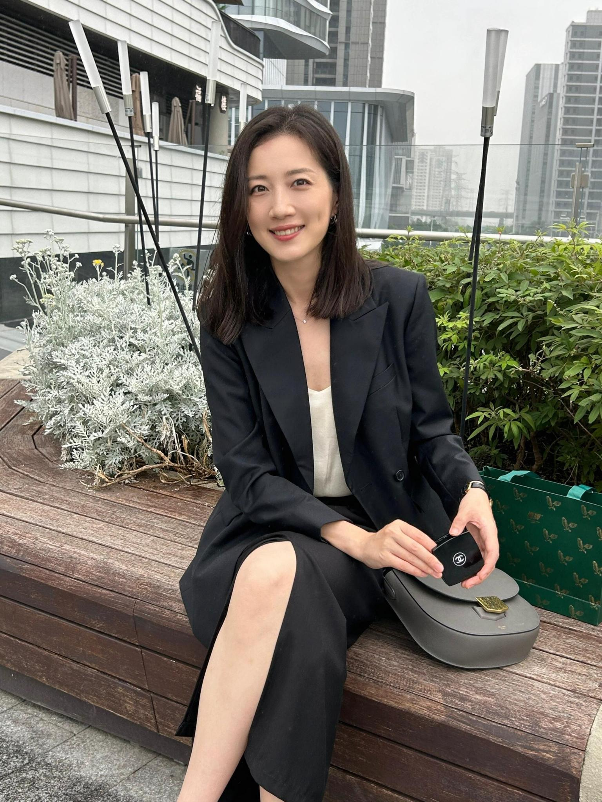
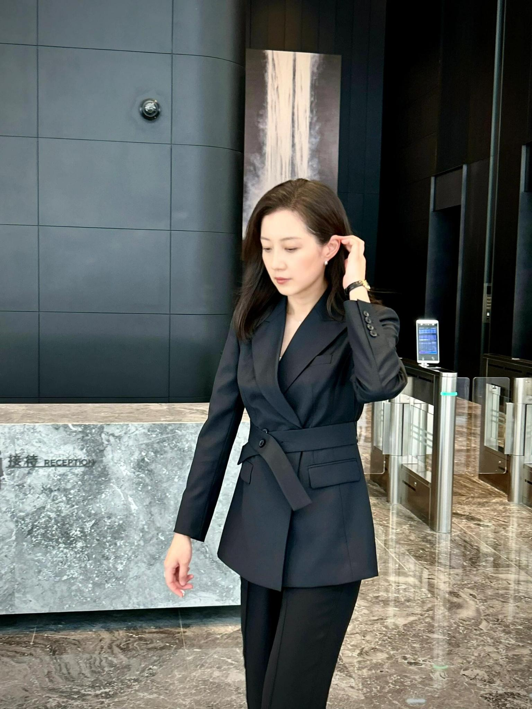
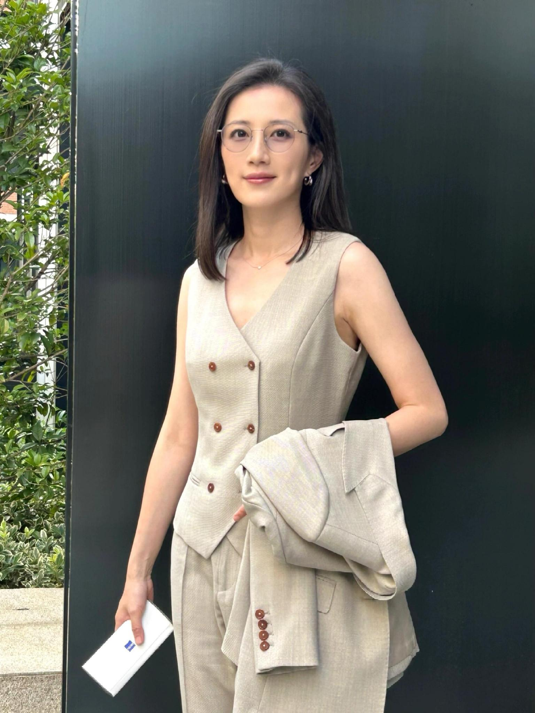
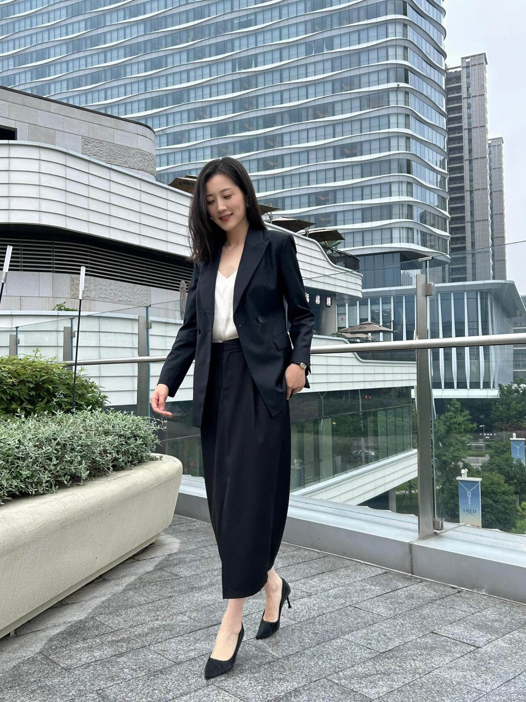
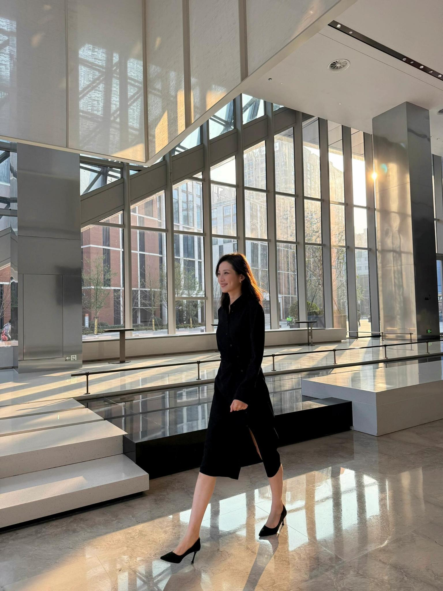

全球云与数据中心
覆盖关键市场的基础设施资源，支持企业业务快速部署和弹性扩展。
Zenlayer 高性能边缘云与全球连接
Senior Technical Advisor（STA）
为企业客户提供云基础设施、全球网络加速、边缘计算与技术咨询，帮助业务更快进入全球市场。
About
Daisy 专注于理解客户业务目标，并将其转化为稳定、低延迟、可扩展的云与网络架构方案。
Solutions
覆盖关键市场的基础设施资源，支持企业业务快速部署和弹性扩展。
面向实时互动、AI、游戏、电商与媒体场景优化访问体验。

从需求梳理、架构评估到交付落地，提供清晰可执行的技术建议。

Customer Success
Testimonials
Daisy 能把复杂的网络与云资源问题讲清楚，并给出贴近业务目标的解决路径。

她的技术建议兼顾性能、成本和上线速度，让我们的全球扩展计划更有确定性。
从沟通到落地都非常专业，是值得信赖的长期技术顾问。
Gallery





Contact